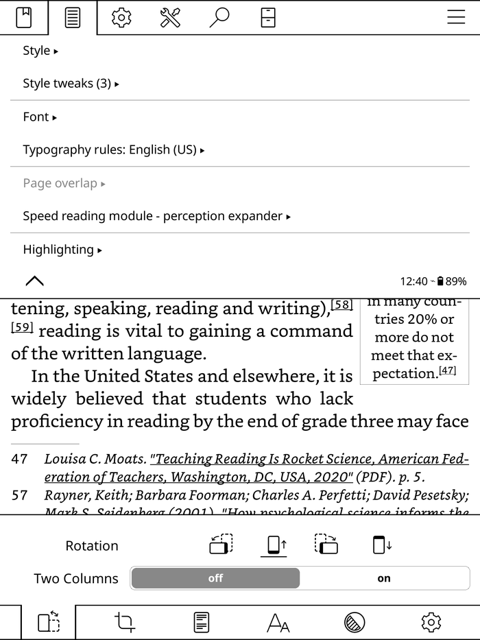
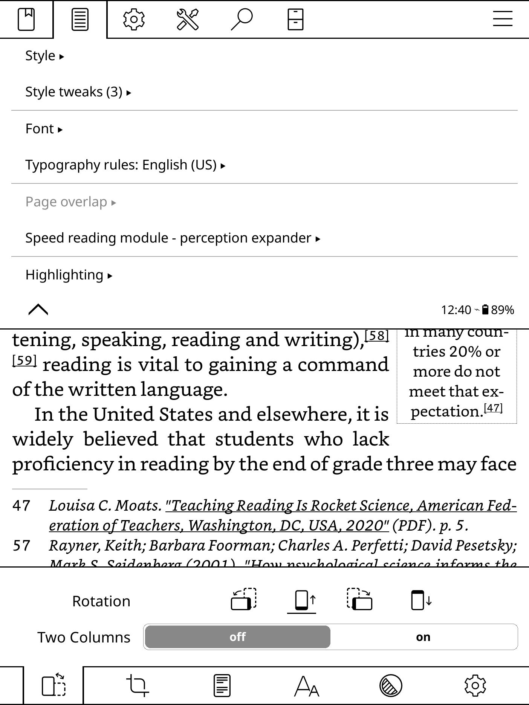

把 KOReader 真正用起来——从装好书到同步笔记的完整实战路径
KOReader 不是 Kindle 上的小众玩具，它是你墨水屏设备的专属操作系统。这篇教程带你从零把它装好、把书传进去、调好排版、打通多设备同步。
读完这篇教程，你能够：在 Kindle/Kobo/Android 设备上成功安装 KOReader、用 calibre 无线把书灌进设备、把排版调到墨水屏最舒服的状态、让两台设备的阅读进度自动同步。
准备工作：先确认你的设备
KOReader 支持几乎所有主流墨水屏设备和 Android 平板（你去koreader官网看支持列表就知道覆盖范围有多广），但不同平台的安装路径差异很大。先对应你的设备类型：
- Kindle（Paperwhite / Oasis / Voyage）：需要越狱。KOReader 的安装包以 USB 传输方式刷入，不需要拆机，但需要一次性越狱操作。如果你还没越狱，先去查一下你的 Kindle 型号是否在越狱支持列表里。
- Kobo（Aura / Libra / Clara）：相对简单，下载对应版本的 KOReader 安装包，通过 USB 复制到设备根目录，安全弹出后重启设备即可。
- PocketBook：类似 Kobo，也是把安装包丢进设备根目录重启。
- Android 平板/手机：最简单，直接装 APK。注意 Android 上 KOReader 需要读写存储权限，首次启动会弹窗询问。

安装包从官方下载拿，别从第三方论坛随便下——KOReader 更新频率很高，第三方镜像常常滞后好几个版本。装好之后第一次启动，KOReader 会扫描设备上的电子书文件，这步可能花几分钟，耐心等它跑完。
第一步：把书传进设备
KOReader 装好后第一件事是把书弄进去。最常用的三种方式，按推荐顺序说。
calibre 无线传书（推荐）
这是最舒服的方式——电脑开着 calibre，设备和电脑在同一个 Wi-Fi，KOReader 直接连上 calibre 的 OPDS 服务器浏览和下载书库。
calibre 端设置：打开 calibre → 顶部菜单「连接/共享」→ 点「启动无线内容服务器」。第一次用会提示你设用户名密码，随便设一个记下来就行。启动后 calibre 主界面右下角会显示一个 IP 地址和端口，比如 192.168.1.100:8080。
KOReader 端连接：打开 KOReader → 主菜单 → 「OPDS 浏览器」→ 「添加 OPDS 源」。URL 填 http://calibre显示的IP:端口/opds（注意一定要带末尾的 /opds，很多人卡在这里），用户名密码就是刚才 calibre 里设的。保存之后 KOReader 就能看到 calibre 书库里的所有分类和书名，点任意一本直接下载到设备。
这里注意一个常见坑：如果你在酒店或校园 Wi-Fi，设备和电脑可能被隔离在不同子网，这种情况下无线传书会超时。换成手机热点或者家里路由器就行。
USB 直拷
最原始也最可靠的方式。用 USB 把设备连电脑，直接把 EPUB/PDF/MOBI 文件复制到设备存储的任意目录，然后在 KOReader 里通过文件浏览器打开。KOReader 的文件浏览器功能相当完整——复制、移动、重命名、批量操作都有，不只是个打开文件的壳。
云存储同步
Dropbox、WebDAV、坚果云都支持。KOReader 里进「云存储」插件，选对应服务按提示授权。坚果云需要先在网页端设置里手动开启 WebDAV，URL 格式是 https://dav.jianguoyun.com/dav/（末尾一定要有斜杠）。
第二步：调到眼睛舒服的排版
墨水屏和手机屏幕不一样——字太小心累、行距太密翻页多、边距太窄残影明显。KOReader 的排版引擎就是为墨水屏设计的，值得花 10 分钟调一遍。
打开一本书，点击屏幕底部唤出排版菜单。逐项调：
字号：默认 18px 左右，根据你的设备尺寸和视力调整。Paperwhite 300ppi 屏幕上 20px 是比较舒服的起点。
行距：1.5 倍到 2.0 倍之间试。中文排版行距太密会让眼睛快速疲劳，这是墨水屏阅读和手机阅读最大的不同之一。
字距：默认 0% 就行，中文一般不动。英文混排时如果看到单词间距特别宽，可以调到 -5% 稍微收一点。
页边距：上下左右四边独立可调。墨水屏残影在边缘最明显，建议左右至少留 15px，上下留 20px。
字体：KOReader 内置几种字体，但中文支持一般。你可以把自己喜欢的中文字体（思源黑体、霞鹜文楷之类）用 KOReader 的「字体」功能加载进去——每本书还能独立设字体，技术文档用等宽字体、小说用宋体，各配各的。
对齐方式：中文推荐两端对齐，英文也是。左对齐适合代码片段或诗歌。
调完一本觉得舒服了，到排版菜单底部点「保存为全局默认」——以后所有新书都用这套设置。如果有特殊需求（比如漫画和论文），可以存成配置文件，按书的类型自动套用——具体每个参数的调优思路和配置文件怎么玩，在koreader文档里有详细说明。

第三步：多设备同步阅读进度
如果你同时用两台设备读同一本书，同步进度是刚需。KOReader 有几种方案，从简单到完整排列：
Kosync（推荐）
Kosync 是 KOReader 官方推荐的进度同步服务。功能覆盖进度、书签、高亮、笔记的多设备同步。
公共 Kosync：开箱即用，进 KOReader 插件菜单启用 Kosync，注册一个账号就能用。但数据存在第三方服务器上——虽然是开源项目，介意的话用自建方案。
自建 Kosync：Docker 一键部署，完全掌控数据。如果你有个闲置的 VPS 或者家里有 NAS，10 分钟就能搭好。
手动同步（最后手段）：KOReader 的阅读数据保存在每本书同目录下的 .sdr/ 隐藏子目录里。两台设备上同一本书的文件名和路径完全一致的话，直接把 .sdr/ 目录从 A 复制到 B 就行。
手动进度同步
如果你不想折腾 Kosync，还有个笨办法但靠谱：两台设备都用 calibre 无线传书，calibre 的「阅读进度」功能会在书库里记录每本书的最后阅读位置。虽然不是自动实时的，但每次连 calibre 时能手动对齐。
常见卡点：三个新手最容易翻车的地方
卡点一：calibre 无线连不上
90% 的情况是以下三个原因：设备和 calibre 电脑不在同一个 Wi-Fi、URL 没带 /opds 后缀、calibre 电脑防火墙拦了入站连接。排查顺序先确认 Wi-Fi，再检查 URL，最后暂时关掉 calibre 电脑的防火墙试试。
卡点二：Dropbox/WebDAV 认证失败
Dropbox 需要设备浏览器支持 OAuth 弹窗授权——部分老款 Kindle 没有浏览器功能，会直接认证失败。改用 WebDAV 是最稳的替代方案，国内坚果云、阿里云盘都支持。
卡点三：Kosync 不同步
先手动触发一次同步（Kosync 插件里点「手动同步」），确认网络没问题。手动同步比自动同步更可靠，避免后台同步被设备系统杀进程打断。如果还是不行，最后手段就是手动复制 .sdr/ 目录。
进阶一句话
跑通上面这些，KOReader 对你来说就是个靠谱的墨水屏阅读底座了。再往下可以折腾的方向：用 SSH/SFTP 传书（Kindle 上特别好用）、导出 Markdown 格式笔记到电脑、配置文件系统按书类自动切换排版、甚至自己写 Lua 插件改功能。
KOReader 作为开源社区维护的项目，这套资料在三个仓库都能拿到：GitHub、Gitee、GitCode 各有一份完整备份，国内网络环境下 Gitee 和 GitCode 访问速度更快。